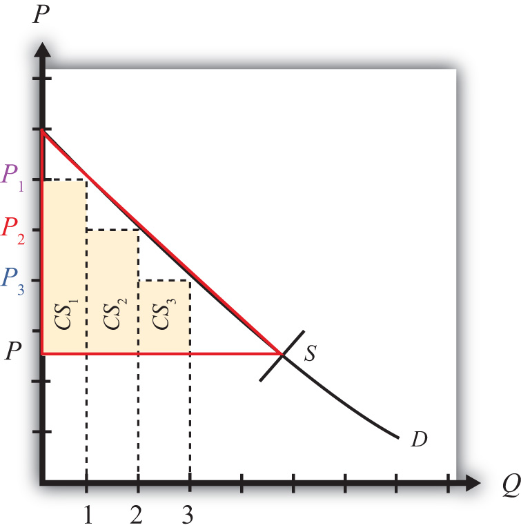
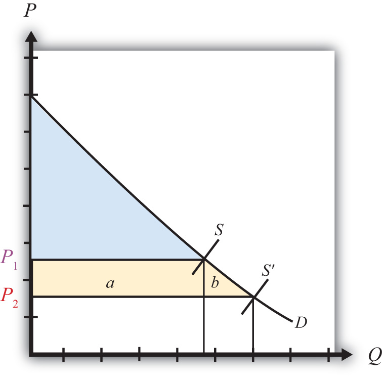
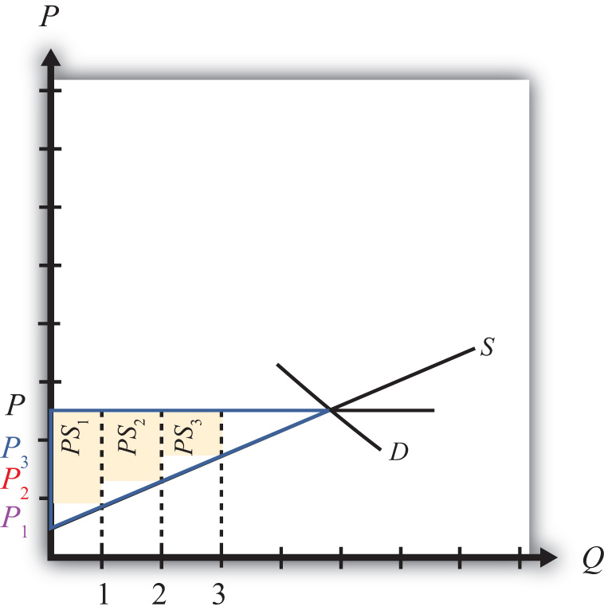
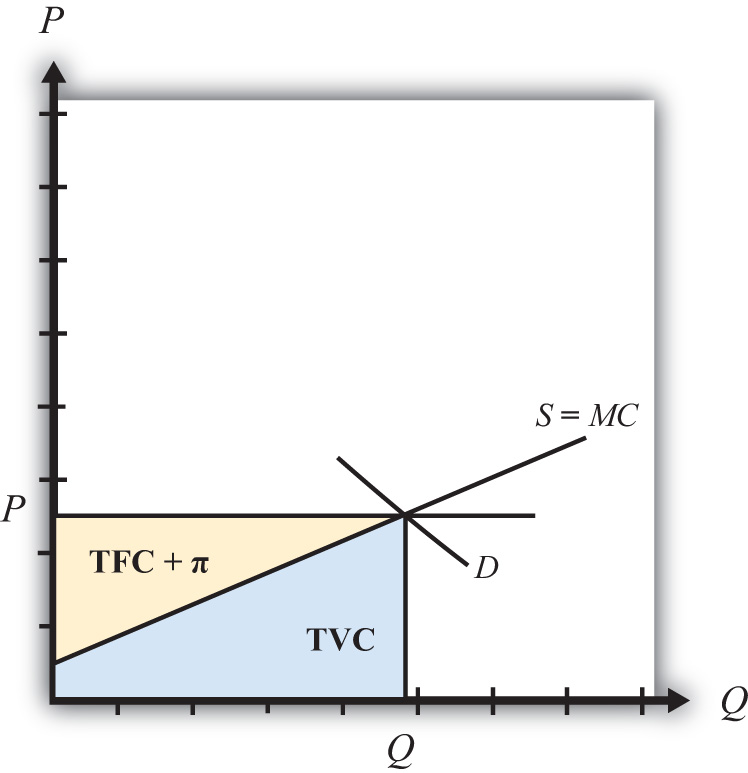
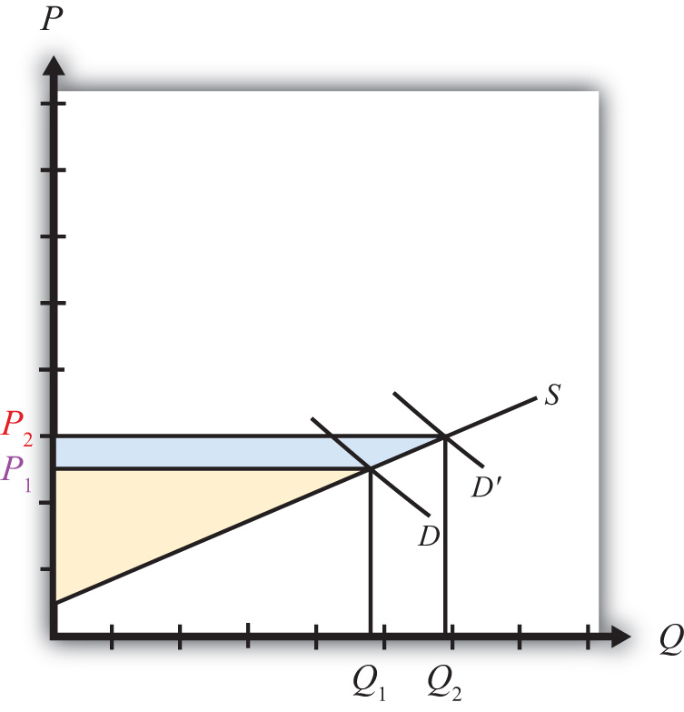

A partial equilibrium analysis distinguishes between the welfare of consumers who purchase a product and the producers who produce it. Consumer welfare is measured using consumer surplus, while producer welfare is measured using producer surplus. Revenue collected by the government is assumed to be redistributed to others. Government revenue is either spent on public goods or is redistributed to someone in the economy, thus raising someone’s welfare.
Consumer surplus is used to measure the welfare of a group of consumers who purchase a particular product at a particular price. Consumer surplusThe difference between what consumers are willing to pay for a unit of the good and the amount consumers actually do pay for the product. is defined as the difference between what consumers are willing to pay for a unit of the good and the amount consumers actually do pay for the product. Willingness to pay can be read from a market demand curve for a product. The market demand curve shows the quantity of the good that would be demanded by all consumers at each and every price that might prevail. Read the other way, the demand curve tells us the maximum price that consumers would be willing to pay for any quantity supplied to the market.
A graphical representation of consumer surplus can be derived by considering the following exercise. Suppose that only one unit of a good is available in a market. As shown in Figure 7.7 "Calculating Consumer Surplus", that first unit could be sold at the price P1. In other words, there is a consumer in the market who would be willing to pay P1. Presumably that person either has a relatively high desire or need for the product or the person has a relatively high income. To sell two units of the good, the price would have to be lowered to P2. (This assumes that the firm cannot perfectly price discriminate and charge two separate prices to two customers.) A slightly lower price might induce another customer to purchase the product or might induce the first customer to buy two units. Three units of the good could be sold if the price is lowered to P3, and so on.
Figure 7.7 Calculating Consumer Surplus
The price that ultimately prevails in a free market is that price that equalizes market supply with market demand. That price will be P in Figure 7.7 "Calculating Consumer Surplus" as long as the firms do not price discriminate. Now let’s go back to the first unit that could have been sold. The person who would have been willing to pay P1 for a unit of the good ultimately pays only P for the unit. The difference between the two prices represents the amount of consumer surplus that accrues to that person. For the second unit of the good, someone would have been willing to pay P2 but ultimately pays P. The second unit generates a smaller amount of surplus than the first unit.
We can continue this procedure until the market supply at the price P is reached. The total consumer surplus in the market is given by the sum of the areas of the rectangles. If many units of the product are sold, then a one-unit width would be much smaller than shown in Figure 7.7 "Calculating Consumer Surplus". Thus total consumer surplus can reasonably be measured as the area between the demand curve and the horizontal line drawn at the equilibrium market price. This is shown as the red triangle in the diagram. The area representing consumer surplus is measured in dollars.
Suppose the supply of a good rises, represented by a rightward shift in the supply curve from S to S′ in Figure 7.8 "Depicting a Change in Consumer Surplus". At the original price, P1, consumer surplus is given by the blue area in the diagram (the triangular area between the P1 price line and the demand curve). The increase in supply lowers the market price to P2. The new level of consumer surplus is now given by the sum of the blue and yellow areas in Figure 7.8 "Depicting a Change in Consumer Surplus" (the triangular area between the P2 price line and the demand curve). The change in consumer surplus, CS, is given by the yellow area in Figure 7.8 "Depicting a Change in Consumer Surplus" (the area denoted by a and b). Note that the change in consumer surplus is determined as the area between the price that prevails before, the price that prevails after, and the demand curve. In this case, consumer surplus rises because the price falls. Two groups of consumers are affected. Consumers who would have purchased the product even at the higher price, P1, now receive more surplus (P1 − P2) for each unit they purchase. These extra benefits are represented by the rectangular area a in the diagram. Also, there are additional consumers who were unwilling to purchase the product at price P1 but are now willing to purchase at the price P2. Their consumer surplus is given by the triangular area b in the diagram.
Figure 7.8 Depicting a Change in Consumer Surplus
Producer surplus is used to measure the welfare of a group of firms that sell a particular product at a particular price. Producer surplusThe difference between what producers actually receive when selling a product and the amount they would be willing to accept for a unit of the good. is defined as the difference between what producers actually receive when selling a product and the amount they would be willing to accept for a unit of the good. Firms’ willingness to accept payments can be read from a market supply curve for a product. The market supply curve shows the quantity of the good that firms would supply at each and every price that might prevail. Read the other way, the supply curve tells us the minimum price that producers would be willing to accept for any quantity demanded by the market.
A graphical representation of producer surplus can be derived by considering the following exercise. Suppose that only one unit of a good is demanded in a market. As shown in Figure 7.9 "Calculating Producer Surplus", some firm would be willing to accept the price P1 if only one unit is produced. If two units of the good were demanded in the market, then the minimum price to induce two units to be supplied is P2. A slightly higher price would induce another firm to supply an additional unit of the good. Three units of the good would be made available if the price were raised to P3, and so on.
Figure 7.9 Calculating Producer Surplus
The price that ultimately prevails in a free market is the price that equalizes market supply with market demand. That price will be P in Figure 7.9 "Calculating Producer Surplus". Now let’s go back to the first unit demanded. Some firm would have been willing to supply one unit at the price P1 but ultimately receives P for the unit. The difference between the two prices represents the amount of producer surplus that accrues to the firm. For the second unit of the good, some firm would have been willing to supply the unit at the price P2 but ultimately receives P. The second unit generates a smaller amount of surplus than the first unit.
We can continue this procedure until the market demand at the price P is reached. The total producer surplus in the market is given by the sum of the areas of the rectangles. If many units of the product are sold, then the one-unit width would be much smaller than shown in Figure 7.9 "Calculating Producer Surplus". Thus total producer surplus can reasonably be measured as the area between the supply curve and the horizontal line drawn at the equilibrium market price. This is shown as the yellow triangle in the diagram. The area representing producer surplus is measured in dollars.
Producer surplus can be interpreted as the amount of revenue allocated to fixed costs and profit in the industry. This is because the market supply curve corresponds to industry marginal costs. Recall that firms choose output in a perfectly competitive market by setting the price equal to the marginal cost. Thus the marginal cost is equal to the price P in Figure 7.10 "Interpreting Producer Surplus" at an industry output equal to Q. The marginal cost represents the addition to cost for each additional unit of output. As such, it represents an additional variable cost for each additional unit of output. This implies that the area under the supply curve at an output level such as Q represents the total variable cost (TVC) to the industry, shown as the blue area in Figure 7.10 "Interpreting Producer Surplus".
Figure 7.10 Interpreting Producer Surplus
On the other hand, the market price multiplied by the quantity produced (P × Q) represents the total revenue received by firms in the industry. This is represented by the sum of the blue and yellow areas in the diagram. The difference between the total revenue and the total variable cost, in turn, represents payments made to fixed factors of production, or total fixed cost (TFC), and any short-run profits (Π) accruing to firms in the industry (the yellow area in the figure—that is, the area between the price line and the supply curve). This area is the same as the producer surplus.
Since fixed factors of production represent capital equipment that must be installed by the owners of the firms before any output can be produced, it is reasonable to use producer surplus to measure the well-being of the owners of the firms in the industry.
Suppose the demand for a good rises, represented by a rightward shift in the demand curve from D to D′ in Figure 7.11 "Depicting a Change in Producer Surplus". At the original price, P1, producer surplus is given by the yellow area in Figure 7.11 "Depicting a Change in Producer Surplus" (the triangular area between the P1 price and the supply curve). The increase in demand raises the market price to P2. The new level of producer surplus is now given by the sum of the blue and yellow areas in the figure (the triangular area between the price P2 and the supply curve). The change in producer surplus, PS, is given by the blue area in the figure (the area between the two prices and the supply curve). Note that the change in producer surplus is determined as the area between the price that prevails before, the price that prevails after, and the supply curve. In this case, producer surplus rises because the price increases and output rises. The increase in price and output raises the return to fixed costs and the profitability of firms in the industry. The increase in output also requires an increase in variable factors of production such as labor. Thus one additional benefit to firms not measured by the increase in producer surplus is an increase in industry employment.
Figure 7.11 Depicting a Change in Producer Surplus
Jeopardy Questions. As in the popular television game show, you are given an answer to a question and you must respond with the question. For example, if the answer is “a tax on imports,” then the correct question is “What is a tariff?”
Suppose the demand for baseballs is given by D = 1,000 – 20P.
Suppose the supply of baseballs is given by S = 30P.